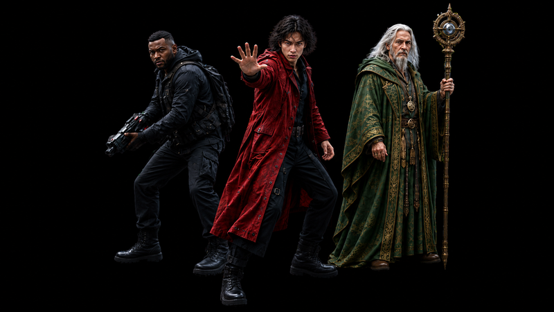
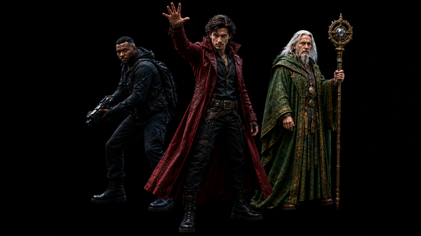
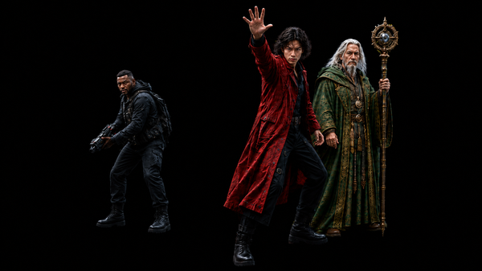
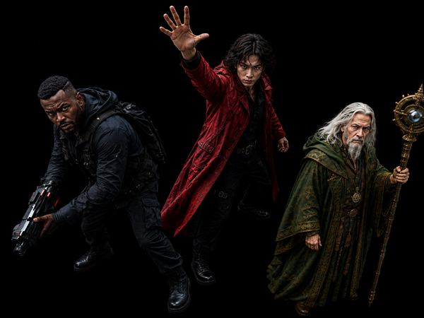

DIRECT THE GENERATION.
让复杂创作，从反复生成走向主动控制
TwitCanva 将角色、动作、空间关系、场景和镜头等创作要求，组织为可编辑、可复用的控制资产。
创作者可分开创建和修改控制资产，再通过画布组合起来生成图像与视频

这个场景，怎样在 TwitCanva 中完成？
不只靠文字 Prompt，角色身份、动作姿态、人物站位与群像环境被拆解为独立节点，通过画布连线确立空间关系，协同汇聚生成终局画面。

ONE CHANGE. MORE TO FIX.
修改一个动作，可能牵动整张画面

调整前：角色、站位和镜头均符合预期。
三种典型的漂移结果
SAME EDIT INTENT. DIFFERENT UNWANTED CHANGES.动作改了，角色外观也发生了变化。

三个人还在，但彼此的距离和前后关系变了。

人物基本保留，但取景、大小和画面重心发生了变化。

为什么单变量修改，会引发全局连锁反应？
多种要求写在同一段文字里，缺少分别控制的依据
一段文字需要同时表达角色长相、动作、站位和镜头。创作者很难只保留满意的部分，往往需要一边修改，一边反复协调其他要求。
模型根据当前条件重新生成，无法自动锁定已有内容
模型会根据当前描述重新生成整张画面。即使用文字写上“其他保持不变”，模型也只能尝试理解这一要求，无法自动保证原本成立的部分不发生变化。
局部修改带来全图返工，陷入反复调试深渊
每次尝试都可能解决一个问题，又引发新的变化。为了把一个动作调对，创作者需要重新检查和微调整张画面。
改动作时，已有的角色、站位和镜头应该能继续用。
问题不是模型画不好，而是所有变量混在了一起——只要没有把控制显式拆开，任何局部微调都会沦为全图重新抽卡。
ONE CHANGE. FULL REROLL.
当结果已经基本正确，为什么修改一个变量，仍然会重新打开整张画面的不确定性？
DECOMPOSE BEFORE GENERATE.
复杂场景不是一个 Prompt。先把原本耦合在生成里的角色、动作、人物关系、群像与环境拆成可管理的控制资产，再进入生成。
Crowd · Environment
谁在场，以及角色如何行动。
人物彼此怎么站，以及主体如何组织在空间里。
群像如何组织，以及场景发生在什么环境中。

复杂度没有消失。 控制权发生了转移。
角色、动作、人物关系、群像与环境，本来就存在于生成过程里。TwitCanva 把这些原本由模型隐式决定的变量，转成用户可以观察、编辑和组合的控制资产。